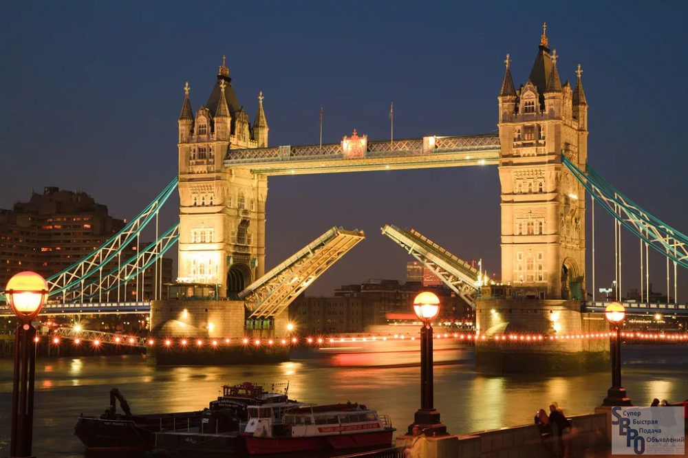
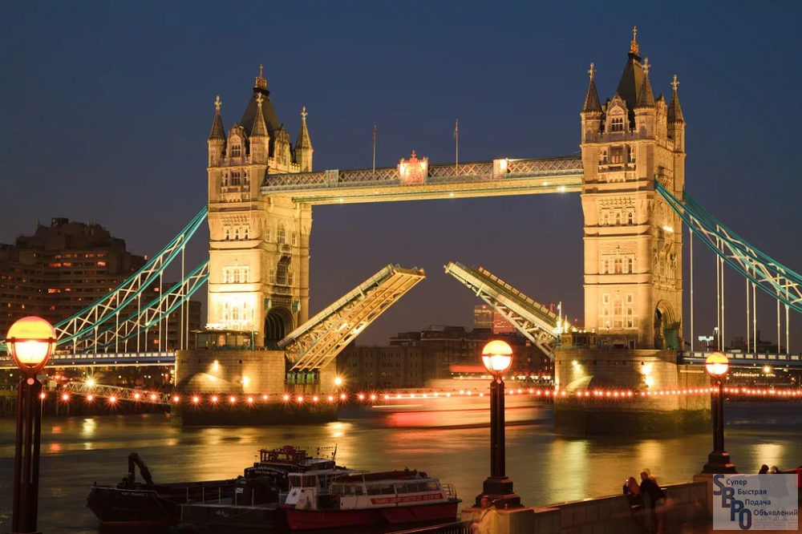

Роль достопримечательностей
Достопримечательности Лондона играют важную роль в привлечении туристов и развитии туристической индустрии города. Они представляют историческую и культурную ценность, позволяют познакомиться с богатым наследием и архитектурой Лондона. Кроме того, достопримечательности являются символами города и его узнаваемыми чертами, создавая уникальную атмосферу и привлекая внимание как местных жителей, так и гостей из других стран. Они также способствуют развитию экономики города, привлекая туристические расходы и создавая рабочие места в сфере туризма и гостеприимства. Кроме того, достопримечательности Лондона являются объектами культурного и образовательного туризма, предлагая посетителям возможность изучить историю, искусство и науку., см